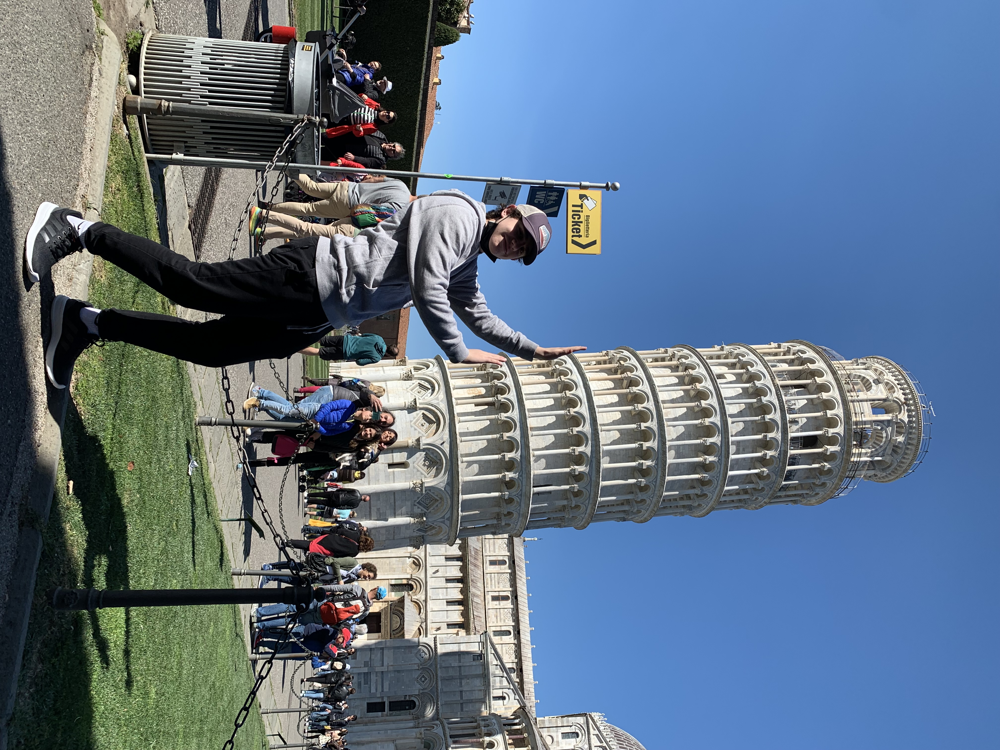
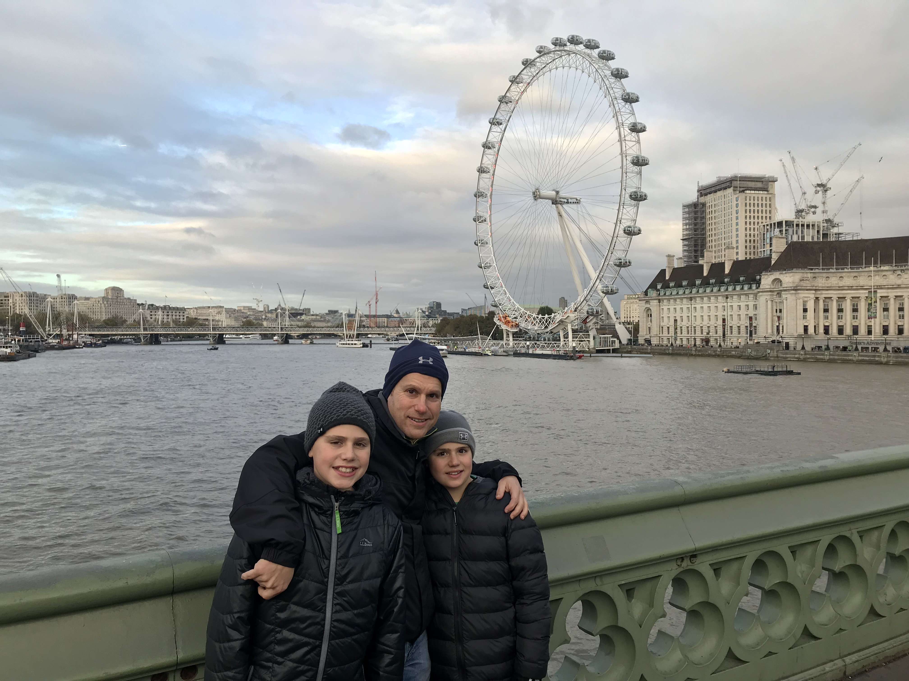
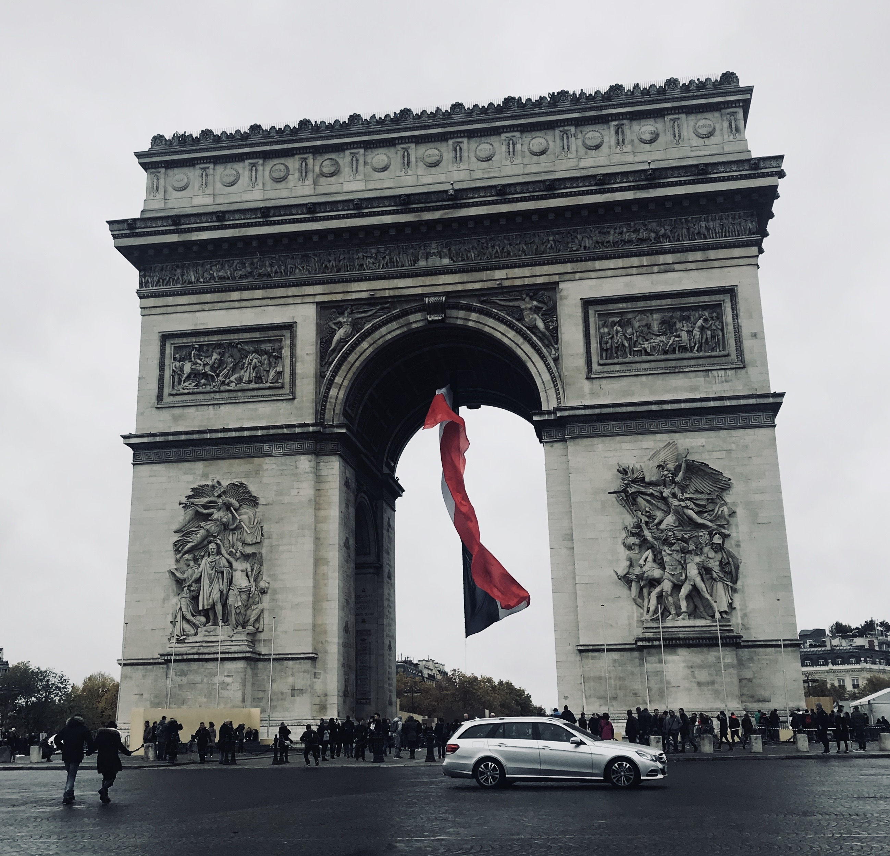
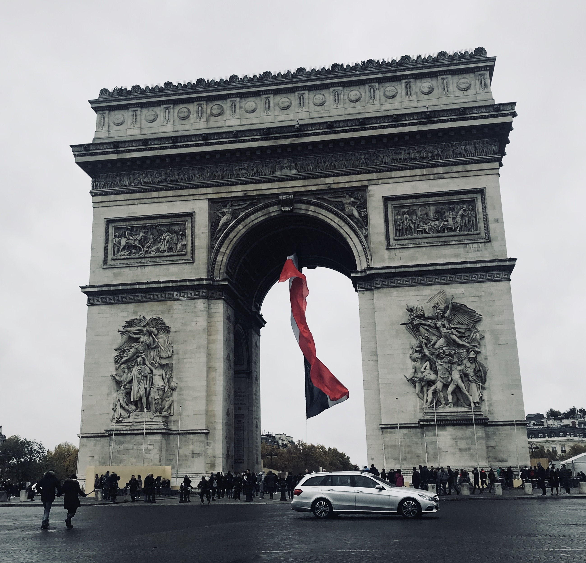

Tuscany, Italy
Tuscany is a region in central Italy known for its beautiful landscapes, rich history, and artistic heritage. It is famous for its rolling hills, vineyards, and charming medieval towns. We rented a villa and explored surrounding areas and towns like Florence, Pisa, and Siena. The views from the hills and vineyards were truly breathtaking.
Pisa, Italy
Pisa is a city in Tuscany, Italy, known for its iconic Leaning Tower. The tower is a freestanding bell tower of the cathedral in Pisa and is famous for its unintended tilt. We visited the tower and took the classic tourist photos of pretending to hold it up.
Lake Cuomo, Italy
We only stayed here for one night before our flight back home but the Airbnb we rented had the best view of the lake and surrounding city I have ever seen in my life. It honestly might be the best view I have ever seen in my life.

London, England
A historic and cultural hub, with landmarks like Big Ben, Buckingham Palace, and the Tower of London. My parents surprised my brother and I with going to England and France, so we were really excited because it was our first time going to Europe. As well as going to the main tourist attractions we went to the platform where Harry Potter got on the train, which was pretty cool. Overall, I would want to go back in order to really explore all the city has to offer.
Paddington Station, London
London Eye, London
 

Paris, France
The city of love and light, the city is rich in culture and history. This was my first and only time going to France so far, going to the Louvre and seeing the Mona Lisa was really cool. As well as going up the Eiffel town at night when the lights are really something to look at.
Mexico
Mexico is a country in North America known for its rich culture, history, and beautiful landscapes. We went to Mexico for a family vacation and stayed at an all-inclusive resort in Cancun. Although we were in a very big tourist hub we still got out into the jungle to go kayaking, ziplining, and cliff-jumping, which was by far my favorite things during the trip.
Grand Canyon, Arizona
The Grand Canyon is a natural wonder located in Arizona, USA. It is known for its immense size and intricate and colorful landscape. We went to the Grand Canyon on a family road trip and it was one of the most beautiful places I have ever seen. We did a lot of hiking and biking while we were there, and it really makes you appreciate just how big the canyon is.
Zion National Park, Utah
Zion National Park is located in Utah, USA, and is known for its stunning red rock formations and canyons. We went to Zion on the same family road trip and it was also one of the most beautiful places I have ever seen. There was also a trail called the Narrows, which is a hike through a river that runs through the canyon.